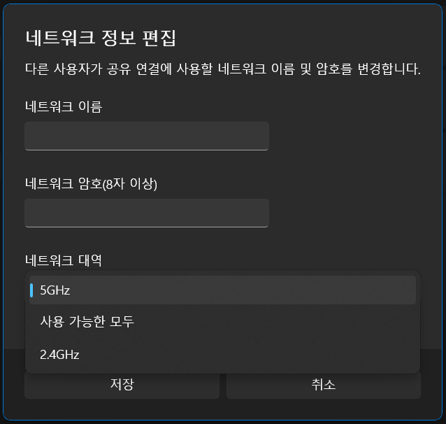

DIY Wi-Fi 6E AP
서론
Wi-Fi 6E가 발표된 지도 어언 3년.
그냥 6GHz 대역을 한번 써보고 싶었습니다. 실사용 목적이라기보단 호기심에 가까운 편이라 가급적 저렴하게 Wi-Fi 6E 네트워크를 구성해보려고 했습니다.
- AP: 시중의 비교적 저렴한[1] Wi-Fi 6E AP는 브로드컴 칩셋을 쓰는 것 같은데, OpenWrt를 올려서 쓰기엔 지원이 아직 부족합니다. 커펌을 포기하고 구매할 정도로 가성비가 훌륭한가 하면 제 입장에선 아닌 것 같네요.
- 스마트폰 핫스팟: 아쉽게도 지금 제가 사용하는 스마트폰은 Wi-Fi 6E를 지원하지 않네요. 이거 하나 때문에 플래그십 스마트폰을 새로 들일 생각은 없고요.
- PC 핫스팟: Wi-Fi 6E 무선랜카드가 그럭저럭 저렴한데요.[2] SoftAP가 되는지가 관건이겠습니다.
제가 알아본 6GHz 대역 무선랜카드 목록은 다음과 같습니다. (여기 있는게 전부는 아닙니다!)
- M.2 (CNVi 제외)
- Intel: AX210NGW
- MediaTek: RZ608(MT7921K), RZ616(MT7922A)
- Qualcomm: QCNFA765(WCN6856), WNFQ-268AXI(WCN6856), WMX7205(WCN6856)
- mPCIe (AP급 성능)
- MediaTek: AW7916-NPD(MT7916AN)
- Qualcomm: WPEQ-276AX(QCN9072), WMX7406(QCN9074), Pineapple 6(QCN9074)
- USB
- MediaTek: CF-953AX(MT7921AU), A8000(MT7921AU), AWUS036AXML(MT7921AU)
이 중에서 제가 선택한 건 AX210과 MT7922A[3]입니다. 선택한 이유는,
- AX210: 평범하게 실사용하기엔 가장 무난하다고 봅니다. 사실 2021년 초에 알아봤을 땐 이것밖에 선택지가 없었습니다.
- MT7922A: 드라이버 면에서 ath11k보단 mt76이 더 친숙했고, USB보단 PCIe가 더 안정적일 것 같았고, AW7916-NPD도 끌리긴 했지만 그렇게까지 본격적으로 써볼 생각은 아니어서 단념했고, MT7921과 달리 MT7922는 160MHz 채널폭을 지원한다고 하는데 가격도 알리 기준으로 2만원 정도로 적당해서 골랐습니다.
검색해보니 CF-953AX에서 6GHz AP를 켜는 데 성공한 사례가 있네요.
- CF-953AX & MT7921K
- CF-953AX & WCN685x
AX210
AX210 구매 당시엔 단순히 인텔 무선랜카드에선 AP 모드를 지원 안 한다 정도로만 알고 있었는데,[4] 실상은 더 복잡했습니다.
1 | $ iw phy phy0 info | grep -A8 "Supported interface modes:" |
AX210은 (여타 인텔 AC/AX 무선랜카드와 마찬가지로) AP 모드를 지원합니다. 문제가 되는 것은 AX210에는 (여타 인텔 AC/AX 무선랜카드와 마찬가지로) 펌웨어에 박혀있어 비활성화할 수 없는 LAR(Location-Aware Regulatory)이란 기능이 내장되어 있다는 것입니다.
이것이 무엇 하는 기능인고 하니, 주위의 Wi-Fi AP 신호를 들어보고 자신의 국가 위치를 감지하여[5] 해당 국가의 전파규제를 적용하는 기능입니다. 이때 적용되는 주파수 및 출력 제한은 운영체제에서 제공하는 정보가 아니라 펌웨어에 포함된 자체 데이터베이스를 기반으로 합니다. 아래 로그를 보면 phy0에 "self-managed"가 붙어있는데, 리눅스 커널의 wireless-regdb와 별도의 정책을 따른다는 뜻입니다.
1 | $ iw reg get | grep -C1 country |
인텔은 국가별 전파규제를 최대한 지키기 위해 LAR을 도입했겠지만, 국가 감지가 제대로 되지 않거나 실제 법규와 다르게 작동한다면 사용자 입장에서 곤란할 수 있겠죠. 전자는 5GHz AP를 켤 때 문제가 되고, 후자는 6GHz AP를 켤 때 문제가 됩니다.
1 | $ iw phy phy0 info | grep -A1 "Frequencies" |
AX210 펌웨어는 한국 지역에서 6GHz 대역을 활성화한 상태고, station(STA) 모드로는 별다른 문제 없이 사용 가능합니다. 문제는 이렇게 활성화된 6GHz 채널에 "no IR"이란 단서가 붙어있다는 것입니다. 이 플래그가 붙어있으면 해당 채널에서 AP나 ad-hoc 모드로 작동시킬 수 없습니다.[6] 그리고 사용자들의 제보를 종합해봤을 때 아마 현재로선 6GHz 대역을 활성화한 모든 국가에 대해 no IR 플래그가 붙어있을 가능성이 높습니다. 그러면 특정 국가를 통한 우회도 불가능하죠.
5GHz AP를 켜는 꼼수에선 AP scan을 강제로 수행해 국가 감지가 정상적으로 이루어지도록 하는 방법을 썼는데, 6GHz AP를 켜기 위해선 펌웨어 내장 regdb 적용 자체를 막아야 하는 상황이고 이건 지금으로선 방법이 없습니다.
윈도우 11[7]에서도 6GHz 핫스팟은 안 되네요. 6GHz 대역 옵션 자체가 없습니다.

이에 대해 마이크로소프트 측에선 윈도우 문제는 아니라고 하고, 인텔 측에선 규제 문제로 막아놨다고 합니다.
MT7922A
MT7922A도 윈도우 11[8]에서 6GHz 핫스팟이 안 되네요. RZ608에서 비슷한 보고가 있는 걸 보면 저만 안 되는 건 아닌가 봅니다.
대신 OpenWrt에서 시도해서 성공했습니다.
1 | root@OpenWrt:/# iwinfo |
txpower가 3dBm으로 찍히는데 이건 왜인지 모르겠네요. 2.4GHz AP를 켜고 주위 AP와 RSSI를 비교해봤을 때 실제로 출력이 낮은 건 사실인 것 같습니다. 하드웨어 결함이거나 드라이버 탓이거나 할 것 같은데, 작동에 문제는 없어서 일단 무시하고 넘어가겠습니다.
6GHz AP를 켤 때 몇 가지 주의사항이 있습니다. 이것도 다른 사람들이 이미 다 알아낸 건데 저는 혼자 삽질을 하루 밤낮 하고서야 깨달았네요…
- 당연하지만 (6GHz 사용이 허용된 국가로) country를 설정해줘야 합니다.
미설정시 6GHz 대역을 사용할 수 없습니다. - 주 채널로 PSC(Preferred Scanning Channel)를 사용해야 합니다.
PSC의 전체 목록은 5, 21, 37, 53, 69, 85, 101, 117, 133, 149, 165, 181, 197, 213, 229 채널로 총 15개입니다.
AP에서 non-PSC를 주 채널로 삼으면 STA에서 AP를 찾지 못할 수 있습니다. STA가 정말 PSC만 탐색할 수 있는 건지, 아니면 시간만 충분히 들이면 non-PSC도 탐색 가능한 건진 조사가 부족하여 잘 모르겠네요. 일단 표준에서는 6GHz 전용 AP는 PSC를 써야한다고 명시해 두었습니다.[9] - 암호화 방식으로 OWE(Enhanced Open), SAE(WPA3-Personal), WPA3-Enterprise를 사용해야 합니다.
표준에서 6GHz에서 사용 가능한 암호화 방식에 제약을 걸어두었습니다.[10] WPA2-PSK나 암호화 미사용 등을 선택하면 hostapd에서 오류메시지를 띄우며 작동에 실패합니다. - SSID를 숨기지 않는 게 좋습니다.
hidden 옵션을 켜면 STA에서 AP에 접속하지 못합니다. 아마 AX210의 no IR 플래그와 연관된 문제인 것 같은데, 다른 무선랜카드에선 이런 문제가 없는지는 확인하지 못했습니다.
OpenWrt snapshot에서 MT7922A/AP AX210/STA 조합으로 6GHz 대역 네트워크를 세팅하는 과정은 다음과 같습니다.
-
무선랜카드 드라이버와 펌웨어 설치
-
AX210:
opkg install kmod-iwlwifi iwlwifi-firmware-ax210 -
MT7922A: 펌웨어 패키지가 생기기 전까진 따로 다운로드 해줘야 합니다.
1
2
3
4opkg install kmod-mt7921e
cd /lib/firmware/mediatek
wget https://github.com/openwrt/mt76/raw/master/firmware/WIFI_MT7922_patch_mcu_1_1_hdr.bin
wget https://github.com/openwrt/mt76/raw/master/firmware/WIFI_RAM_CODE_MT7922_1.bin
-
-
wpad-openssl패키지 설치 후 재부팅 -
uci 설정
아래는 예시일 뿐입니다./etc/config/network도 적절히 설정해주어야겠죠./etc/config/wireless (AP) 1
2
3
4
5
6
7
8
9
10
11
12
13
14
15
16config wifi-device 'radio0'
option type 'mac80211'
option path 'pci0000:00/0000:00:1c.0/0000:01:00.0'
option channel '85'
option band '6g'
option htmode 'HE160'
option country 'KR'
option txpower '14'
config wifi-iface 'default_radio0'
option device 'radio0'
option network 'lan'
option mode 'ap'
option ssid 'wlan-6g'
option encryption 'sae'
option key 'password'/etc/config/wireless (STA) 1
2
3
4
5
6
7
8
9
10
11
12
13
14config wifi-device 'radio0'
option type 'mac80211'
option path 'pci0000:00/0000:00:1c.1/0000:02:00.0'
option htmode 'HE160'
option country 'KR'
option txpower '14'
config wifi-iface 'default_radio0'
option device 'radio0'
option network 'wan'
option mode 'sta'
option ssid 'wlan-6g'
option encryption 'sae'
option key 'password' -
service network restart
AX210만 그런진 모르겠는데 6GHz AP를 찾고 접속하는 데 느리면 몇 분씩 걸리기도 합니다. iw dev phy0-sta0 scan | grep SSID:로 AP scan을 수행해주면 접속이 빨라질지도요.
아치 리눅스나 윈도우 11에서도 이렇게 만든 6GHz AP에 잘 붙는 걸 확인했습니다.
그래서 중요한 속도는? 그럭저럭 나옵니다.
| Wi-Fi 채널폭 | 20 MHz | 80 MHz | 160 MHz |
|---|---|---|---|
| 최고 링크 속도 (2SS 기준) | 287 Mbps | 1.20 Gbps | 2.40 Gbps |
| iperf 속도 | (UL) 225 Mbps | (UL) 912 Mbps | (DL) 1.23 Gbps |
물론 안테나 간 거리와 각도를 최적화해서 얻은 결과이고, 실사용 세팅에선 이만큼 안 나옵니다.
160MHz 채널폭에서 생각보다 속도가 안 나오는 게 아쉽네요. 컴퓨터가 느린 걸까요.
1 | root@OpenWrt:/# iw dev phy0-sta0 link |
160MHz 채널폭 세팅을 했는데도 실제론 MT7922A → AX210에서만 160MHz를 쓰고 AX210 → MT7922A에선 80MHz밖에 안 쓰는 것 같습니다. 이것도 왜인지 모르겠네요. 5GHz VHT160 세팅에선 속도가 기대한 대로 나오는 걸 봐선 HE160 지원 문제인 것 같기도 하고요.
그 외에도 MT7922A에 자잘하게 아쉬운 점이 좀 있네요. 드라이버와 펌웨어 개발이 더 진척되면 나아지겠죠.
사족
1️⃣ 아시다시피 이미 몇 년 전부터 국내 법규상 Wi-Fi 6GHz 대역이 허용되었습니다.
국내 전파규제는 2.4/5 GHz에서 최대 복사전력(EIRP)을 고정하는 방식을 택했고, 이 방식에선 대역폭(BW)이 넓어질수록 전력밀도(PSD)가 떨어집니다. (EIRP = 10*log(BW) + PSD + G인데 여기서 안테나 이득 G는 잠시 무시하겠습니다.)
| 대역폭 | 20 MHz | 40 MHz | 80 MHz | 160 MHz |
|---|---|---|---|---|
| 전력밀도 | 10 dBm/MHz | 7 dBm/MHz | 4 dBm/MHz | 1 dBm/MHz |
| 복사전력 (동일) | 23 dBm | 23 dBm | 23 dBm | 23 dBm |
이와 달리 (실내용) 6GHz에서는 최대 PSD를 고정하는 방식을 택했는데, 이 방식에선 대역폭이 넓어지는 만큼 EIRP도 올라가므로 SNR 면에서 손해가 없습니다.
| 대역폭 | 20 MHz | 40 MHz | 80 MHz | 160 MHz |
|---|---|---|---|---|
| 전력밀도 (동일) | 2 dBm/MHz | 2 dBm/MHz | 2 dBm/MHz | 2 dBm/MHz |
| 복사전력 | 15 dBm | 18 dBm | 21 dBm | 24 dBm |
PSD 기준이 확 떨어지는 바람에 대역폭이 좁을 때 EIRP가 비교적 낮은 편인데, 아마 미국의 규정을 따오다보니 그렇게 된 게 아닐까 싶습니다.
wireless-regdb에도 한국을 포함한 몇몇 국가에 대해 6GHz 허용 규칙이 들어가 있습니다.
그런데 현재 리눅스 커널에선 출력 제한 정보를 최대 EIRP 기준으로만 관리하고 있기 때문에 최대 PSD 정보를 전달할 방법이 따로 없고, 어쩔 수 없이 wireless-regdb는 PSD 제한을 EIRP 기준으로 번역하여 가장 보수적인 수치를 적어놓았습니다. 이에 따라 160MHz 대역폭에서 출력이 (24dBm이 아니라) 20MHz 대역폭일 때와 마찬가지로 15dBm으로 제한됩니다. PSD 규칙 지원이 어서 추가되면 좋을 텐데요.
2️⃣ Wi-Fi 6E가 도입되면서 장치 등급이란 개념이 생긴 모양입니다. SP(Standard Power), LPI(Low Power Indoor), VLP(Very Low Power) 세 종류로 구분되는데, 앞쪽일수록 높은 출력을 낼 수 있지만 그만큼 제약조건도 빡빡하고, 뒷쪽일수록 제약조건이 덜하지만 출력 제한이 엄격해집니다. 자세히는 잘 모르겠지만 표준 문서엔 없는 용어인걸 보면 국가 전파규제 목적인 것 같네요.
미국의 경우, VLP는 아직까진 FCC에서 제안 수준에 머무르고 있는 것 같고, 실제 규정에 반영된 건 SP와 LPI 뿐인 것 같습니다. SP로 작동시키기 위해선 AFC(Automated Frequency Coordination)란 어마어마한 게 필요하기 때문에 핫스팟용으로 보긴 어려울 것 같습니다. LPI도 AP의 위치를 실내로 제한하기 위해 몇 가지 제약조건이 있는데, 탈착 가능한 외장 안테나를 쓰면 안 되고, 배터리로 동작하면 안 되고, 옥외형 방수 케이스를 쓰면 안 되고, 같은 조건들입니다.[11] 근데 데스크톱이나 스마트폰이 저 조건들을 모두 만족시킬 것 같진 않죠…?
그래서 현재 FCC 규정상 6GHz는 핫스팟용으론 못 쓴다는 해석도 있던데 흠…어쨌든 한국 거주자가 신경쓸 바는 아닌 듯 합니다.
그럼 한국의 전파규제는 어떤가 봅시다. 2022-12-30 기준 "신고하지 아니하고 개설할 수 있는 무선국용 무선설비의 기술기준"의 제7조 제5항 제2호에 따르면,
- 실내 설치: 5925-7125 MHz 대역에서 최대 2dBm/MHz PSD (→ 160MHz 대역폭에서 24dBm EIRP)
- 지하철 내 설치: 5925-6425 MHz 대역에서 최대 2dBm/MHz PSD
- 실내외: 5925-6425 MHz 대역에서 최대 14dBm EIRP
전자가 LPI, 후자가 VLP에 해당합니다. 정부 발표에서도 후자는 테더링 용도로 쓸 수 있다고 밝혔으니 이게 바로 일반적인 핫스팟용인가 봅니다.
제 경우 노트북을 핫스팟으로 만들었기 때문에 본문에서 14dBm 출력제한을 걸었습니다. 어차피 MT7922A가 한참 낮은 출력수준에서 골골거리고 있어서 별 의미는 없습니다만…
3️⃣ 안테나는 뭘 써야 할까요? 6GHz 대역을 쓰려면 6GHz 지원 안테나가 따로 필요할까요?
고급 AP야 알아서 잘 나오겠지만, 알리에서 무선랜카드를 구매하면 6GHz 지원 안테나는 구매옵션에도 없단 말이에요. 기존 노트북 안테나 그대로 쓰면 성능이 떨어지거나 무선랜카드에 부담이 가진 않을까요?
이런 질문이 올라오면 답변끼리 갑론을박이 벌어지는 모양입니다. 1) 6GHz에 맞게 튜닝된 안테나를 쓰는 게 좋다. 2) 기존의 2.4/5 GHz 듀얼밴드 안테나 써도 딱히 문제 없다.
검색해보면 2.4/5/6 GHz 트라이밴드 안테나가 존재하긴 합니다. 패치 안테나도 있고 다이폴 안테나도 있는데, 데이터시트에 나와있는 안테나 이득이나 반사손실 그래프를 보면 역시 튜닝한 게 좋긴 좋구나, 같은 생각이 든단 말이죠. 근데 이 수치가 듀얼밴드 안테나에 비해 얼마나 개선된 건지는 정확히 알기 어렵겠죠.
1)과 2)를 적당히 절충해보자면, 기존 안테나로 6GHz 신호 쏜다고 무선랜카드가 죽진 않겠지만 아무래도 최고의 성능을 이끌어내려면 안테나도 좋은 걸 써야 한다, 는 뻔한 얘기가 나오는데, 이런 절충식 결론에 납득하고 싶진 않으니 누가 실제로 비교 측정을 하든가 놀라운 업계 지식으로 썰을 풀든가 해서 저 같은 찜찜이를 납득시켜주면 좋겠네요.
본문의 측정 결과는 전부 기존 듀얼밴드 안테나 달고 얻은 결과입니다.
4️⃣ regdb를 일종의 키-값 데이터베이스로 본다면 키에 해당하는 것은 국가 코드이고, 값에 해당하는 것은 주파수 및 출력 제한이겠지요.
전파규제를 자체적으로 관리하는 무선랜카드 중에 "키"만 제공하는 경우가 있고,[12] "키"와 "값"을 모두 제공하는 경우가 있습니다. 전자의 예시로는 아데로스 카드가 있고, 후자의 예시는 위에서 설명한 인텔 카드입니다. 확인을 더 해봐야겠지만 MT7922A도 전자에 속하는 것 같네요.
전자의 경우는 우회할 방법이 없지 않은데, 후자의 경우는…펌웨어에 손댈 거 아니면 어렵겠죠.
근데 알아보니 ath11k에도 자체 regdb가 도입됐나 본데요. 헉 너도 이러기야?
1 | output of "iw reg get" |
근데 여기엔 PASSIVE-SCAN 플래그가 없는 걸 봐선 AP 모드로 쓸 수 있을지도요? 누가 QCNFA765로 테스트 해주시길… KR에선 아직 안 된다고 합니다.
다나와 기준으로 Archer AXE75가 20만원쯤 하네요. ↩︎
다나와 기준으로 AX210이 2만원쯤 하네요. ↩︎
RZ616은 아니고 비슷하게 생긴 카드인데 별 차이 없겠죠… ↩︎
그걸 알면서도 왜 샀냐고요? AP 모드는 안 돼도 혹시 ad-hoc 모드 같은 건 될까 했었죠… ↩︎
beacon이나 probe response의 country IE를 참조하는 것으로 추측됩니다. ↩︎
참고로 모니터 모드로는 사용 가능합니다. ↩︎
AX210 드라이버 버전 22.190.0.4 ↩︎
MT7922 드라이버 버전 3.3.0.685 ↩︎
802.11ax-2021 26.17.2.3.2 AP behavior for fast passive scanning ↩︎
802.11ax-2021 12.12.2 Security constraints in the 6 GHz band ↩︎
국내 규정에서 "전원에 연결되어 설치 운용"이라고만 짧게 단서를 달고 넘어간 것과 비교가 되는 지점입니다. ↩︎
이때 "값"은 wireless-regdb가 제공합니다. ↩︎